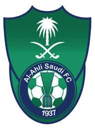

The Saudi Al-Ahly Sports Club is a club that includes several different games in addition to football teams. It is based in the city of Jeddah, in western Saudi Arabia. It was founded on March 17, 1937, and it is the only club that combined the League, the King's Cup and the Super Cup in one season (2016). In the Arab Championships, it is called Al-Ahly Jeddah, a distinction between it and the many Arab Al-Ahly teams. It was launched by its fans and was called, and it was called the championship, and it was dubbed the championship by the Saudi Football Association, as well as the Castle of Cups. the colors of the club are green and white. The club is headquartered. Prince Abdullah Al-Faisal is considered the founder and symbol of the club due to the development of the club in its various activities.
Al-Ahly Club was established in 1355 AH - 1937 AD by four young men, and its headquarters is located in the heart of the dreamy city of Jeddah and is the largest of its sports beacons with its strategic location on its largest street - Prince Muhammad bin Abdulaziz (Tahlia) Street - and the idea of its establishment arose among a number of students in a school Al-Falah - the oldest school in the city of Jeddah - was the beginning of Al-Ahly’s start to broader horizons and gradually progressed to leadership until it became, in the past and present, a giant, pioneering name and a successful ambassador for the nation’s sport in many games, and as a culmination of this success, he was called the Custodian of the Two Holy Mosques King Abdullah bin Abdul Aziz, may God have mercy on him, the title of Ambassador of the Nation on Friday 7/10/1430 AH, corresponding to July 3, 2009 AD
| number | Nationality | Center | The player |
|---|---|---|---|
| 1 | KSA | GK | Yasser Al-Musailim |
| 3 | KSA | CB | Muhammad Al Fateel |
| 4 | KSA | 80 | Muhammad Al-Khubrani |
| 5 | KSA | CB | Talal Al Absi |
| 6 | Brazilian | LB | Lucas Lima |
| 9 | ٍSyrian | ST | Omar Alsoma |
| 10 | KSA | CAM | Salman Al Moasher |
| 11 | KSA | cm | Hussein Al-Maqhawi |
| 21 | Moroccan | CAM | Idris Fattouhi |
| 55 | Serbian | CDM | Lyubomer Vesa |